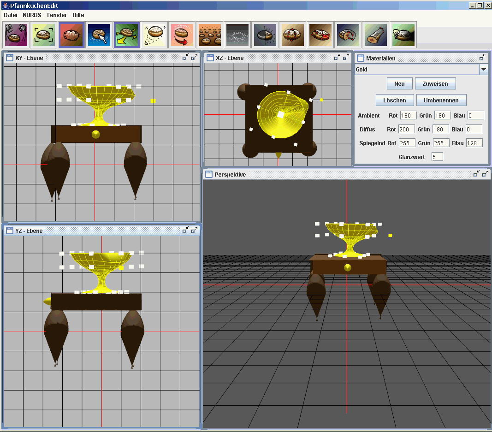
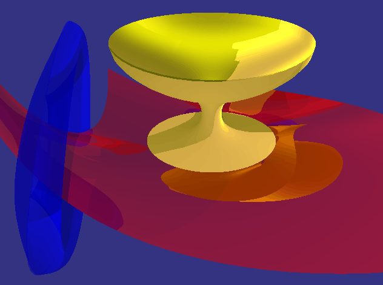

- Der Editor (Direkt ausführbares .JAR File inklusive benutzter Bibliotheken, Entpacken und Starten! )
- Der Raytracer (C++ Source - Visual Studio 6.0 Projekt + Win32 - exe - Datei, einfach Entpacken und Starten :-) )
Links sind momentan nicht verfügbar (werden auf Anfrage aktualisiert).

